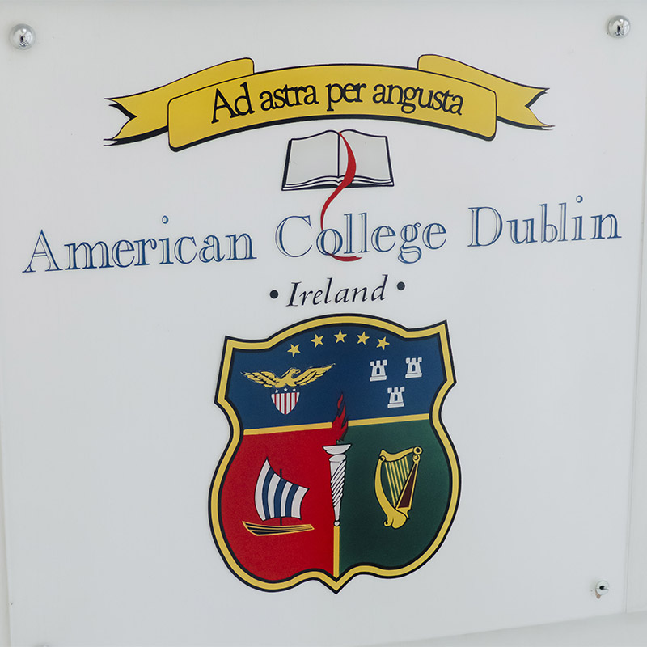

Immerse yourself in all things Ireland
ACD Study Abroad is your ticket to real-world experiences in the gateway to Europe. Learn about international business or performing arts. Explore Irish history and culture. Gain a global mindset to fulfill your potential in an ever-changing world.
Kevin Studer, Dublin study abroad student, summer 2014“I spent one glorious month in Dublin, Ireland and I have to say it was one of the greatest experiences of my life. The professors and staff fully immersed us in the Irish culture and helped us make the most out of our time abroad. Speaking to the locals and experiencing new foods, I was definitely able to break out of my element.”

Dublin ranks third on a list of most successful cities for innovation, livability and capacity to reinvent
The City Momentum Index of innovation-oriented cities, compiled by global real estate services firm Jones Lang LaSalle (JLL), ranked London first, followed by Silicon Valley, Dublin, Bangalore and Boston. Dublin and London are the only European cities in the index's top 20.